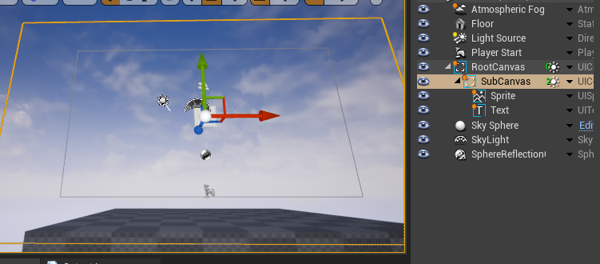

LGUICanvas
Any UI elements that need render and update must be placed under a LGUICanvas in hierarchy.
Draw order of elements
UI elements in canvas are drawn by order of "Depth" property, which is a property of each UI elements. Larger "Depth" render on top of lower one.
And there is a "Sort Order" property of LGUICanvas, "Sort Order" always have top priority then "Depth".
| Property: | Functions: |
|---|---|
| Render Mode | The way the UI is rendered. Options are Screen Space Overlay and World Space and Render Target(Experimental) |
| Sort Order | This can affect draw order and raycast order of UI elements. Larger Sort Order will always draw on top of lower one, and larger one always receive raycast earlier then lower one. |
| Pixel Perfect | Screen Space Overlay mode only. This can avoid half-pixel render, make UI elements render precisely on pixel. |
| Clip Type | Control UI elements pixels visibility. The options are None and Rect and Texture, None means no clip at all, Rect means rectangle area clip, Texture means use a texture's alpha channel for clip. |
| Dynamic Pixels Per Unit | The amount of pixels per unit to use for dynamically created bitmaps in the UI, such as UIText. But!!! Do not set this value too large if you already have large font size of UIText, because that will result in extreamly large font texture! |
| Additional Shader Channels | Flags to enable/disable shader channels. Default only provide Position/Color/UV0, you can check Normal/Tangent/UV1/UV2/UV3 for your own use. |
| Default Materials | Default materials, for render default UI elements. |
| Override Parameters | For not root canvas, inherit or override parent canvas parameters. |
Lets learn by create a UI from scratch.
1. Create a LGUICanvas
LGUICanvas must stay on a actor which have a UIItem as RootComponent. Create a new empty level, drag a UIContainerActor to viewport:
Rename the UIContainer to "RootCanvas", set the "LGUI Transform" parameters like this (rotation:-90,0,90):
Add a LGUICanvas component to "RootCanvas", notice a icon and a "0" appear beside "RootCanvas" in World Outliner: Move your mouse over the icon, a tooltip will appear:
Right click on the down arrow button and choose "Create UI Element"->"UISprite":
A new UISpriteActor will be created, see a white rectangle appear in viewport, and number of drawcall become 1 in "RootCanvas". Rename the UISpriteActor to "Sprite":
Right click on the down arrow button and choose "Create UI Element"->"UIText":
Rename the UITextActor to "Text", "Color" to black, "Depth" to 1. See "New Text" appear on viewport, and drawcall count become 2:
2. Use rect clip
Select "Sprite", change width to 1920, height to 1080, see the white rectangle exceed canvas area:
Select LGUICanvas component from "RootCanvas" actor, change "Clip Type" to "Rect", see the Sprite being clipped with canvas's rect area:
LGUICanvas support hierarchy nested RectClip
Lets add a sub canvas: create a UIContainer, name it "SubCanvas", add a LGUICanvas component to it. Then drag "Sprite" and "Text" to "SubCanvas" as children, now the hierarchy should be like this:
And the "Sprite" is clipped by "SubCanvas" area: 
Change the "SubCanvas" with to 640, height to 360, drag it to see the clip effect:
Select LGUICanvas from "SubCanvas" actor, see the sub canvas parameter is much less than the parent one. Acturally only the top-most canvas can show the full parameters, sub canvas will automatically inherit parent parameters.
But we do have the chance to change sub canvas parameter, by check the "Override Parameters" flags:
If we check "ClipType" flag, then the "ClipType" parameter will appear. Then we can set "None" clip to disable clip:
3. Default Materials
Select LGUICanvas from "RootCanvas", expend "Default Materials" and 3 material appears:
LGUICanvas use these 3 materials to render all UI elements, you can replace any of it with your own implemented material, eg: change shading model to receive light, add emissive glow.